Take · finitions · 30/09/2026
40 écarts relevés dans le code de l'app. Pour chacun : l'écran d'aujourd'hui, la solution dessinée à côté, et l'endroit unique où on la change pour que tout change en même temps. Réponds par numéro.
Si on change la ligne de droite, tous les écrans de la famille suivent.
Un seul rouge #D81E31, fixe dans les deux thèmes ; danger et notification en sont des alias
design-tokens.ts:74-98, 175 · 9 rouges → 1 (+ vote Non et drapeaux, qui ont une raison)
8 gris par thème ; profil, jeu et suggestions les lisent
design-tokens.ts (DESIGN_COLORS) · 48 gris → 8, 4 palettes locales en moins
voteFills pour Oui/Non, choiceSeries pour les options de QCM
theme.ts voteFills + design-tokens.ts · 4 verts et 5 rouges → 2 + 2 ; 3 palettes d'options → 1
3 voiles (léger, moyen, fort), un fond d'affiche, un bloc de partage
design-tokens.ts · ~90 lignes rgba, 2 fonds d'affiche, 4 presque-noirs
AppText et ses variantes : sectionHeader, rowTitle, rowSubtitle, questionFeed, questionDetail, sheetTitle, badge, pill, caption, meta
components/design-system/AppText.recipe.ts, dérivé de TYPOGRAPHY · 841 tailles écrites à la main, 45 valeurs → ~12 pas
ScreenHeader : inline (titre 17 centré) sur les écrans ouverts, large (30 à gauche) seulement sur les onglets
components/design-system/AppHeader.tsx → ScreenHeader · 26 écrans + 14 barres faites main = 40 écrans
BackButton et CloseButton : rond de 36, icône de 20
components/design-system/ · 31 retours, 28 croix en 9 tailles
UnderlineTabs : 16 semi-gras, trait sous le mot, animé, mode défilant pour Explorer
components/design-system/ (sur MovingUnderline) · 5 versions
SheetHeader (poignée 36×5, titre 17, croix) ; une feuille de partage
components/design-system/SheetModal.tsx · 12 poignées, ~17 en-têtes, 2 feuilles de partage
16 de chaque côté ; 1 rem = 16 pt dans NativeWind
SPACING.screen + withNativeWind inlineRem · 14, 16 et 18 selon l'écran
PersonRow : avatar 44, nom, pseudo, action à droite
components/design-system/ListRow.tsx → PersonRow · ~12 rangées, 6 tailles d'avatar
AppButton en 3 tailles (30, 44, 54) ; Chip en 2 tailles
components/design-system/AppButton.recipe.ts, Chip · 67 boutons faits main, 7 pastilles maison
Le jeu lit les gris du thème ; plus d'inversion de couleurs ni de littéraux.
Le modèle unique : game-ink.ts:41-61 → DESIGN_COLORS ; environ 75 lignes dans 5 fichiers
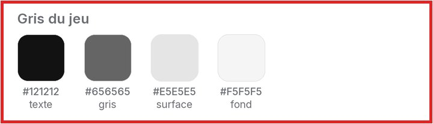
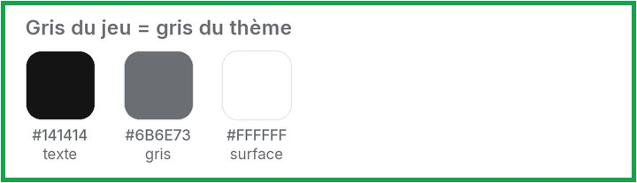
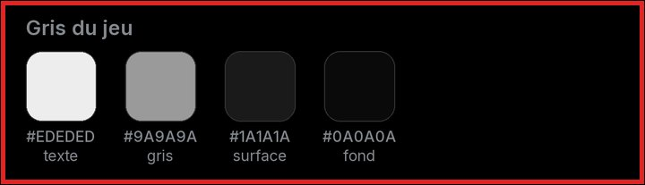
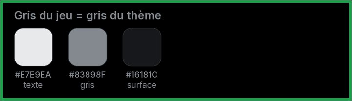
Dans le code : game-ink.ts:41-61 #EDEDED #1A1A1A #9A9A9A #0A0A0A, clair obtenu par invertColor ; GameShopModal.tsx:937-1050, 62 tone('#…')
Pour le compter : grep -rhoE "tone\('#[0-9A-Fa-f]+'\)" src app | sort | uniq -c | sort -rn
Jev : raison_C10 → unjustified_exception (0.59) ; visible_C10 → 1.92 sur 3
La palette claire du profil pointe sur les gris du thème, comme la sombre le fait déjà.
Le modèle unique : editorial.ts:65-78 → DESIGN_COLORS ; 14 hex en moins, 12 fichiers suivent sans être touchés
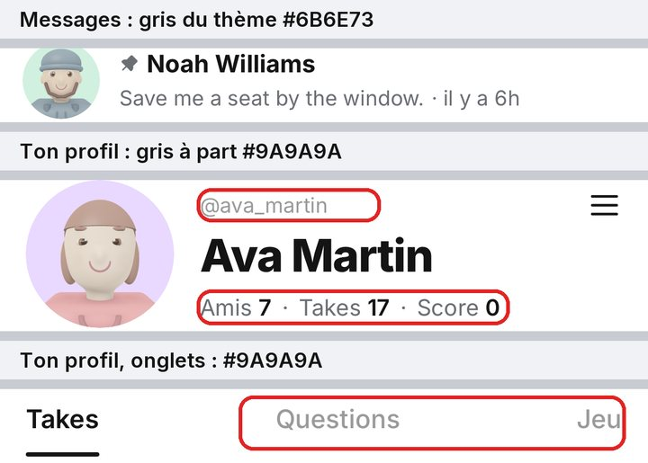
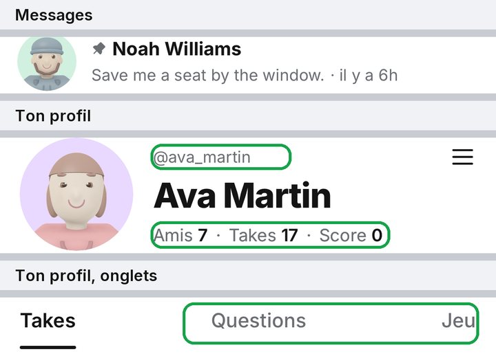
En sombre : capture pas encore faite.
Dans le code : editorial.ts:65-78 muted #9A9A9A (thème #6B6E73), inkSoft #3D3D3D (#494B4F), faint #DCDCDC (#E3E6EA), danger #B3243A
Pour le compter : grep -rln useEditorial app src | grep -v test
Jev : raison_C4 → unjustified_exception (0.41) ; visible_C4 → 1.70 sur 3
#D81E31 dans les deux thèmes, comme tu l'as dit : seul le rouge ne bouge jamais.
Le modèle unique : DESIGN_COLORS.brand, design-tokens.ts:175 ; 8 lignes dans 6 fichiers suivent seules, plus 4 rgba d'editorial.ts
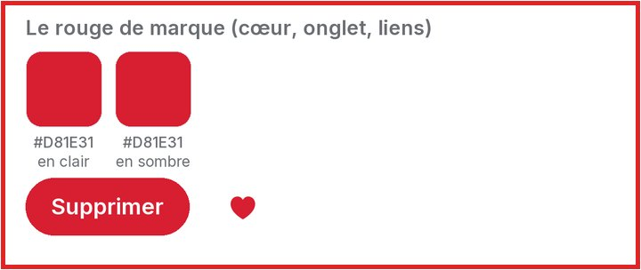
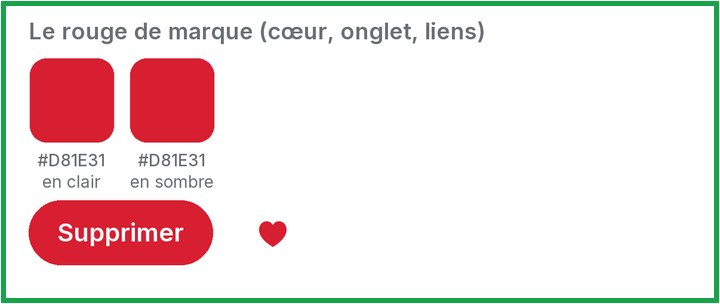
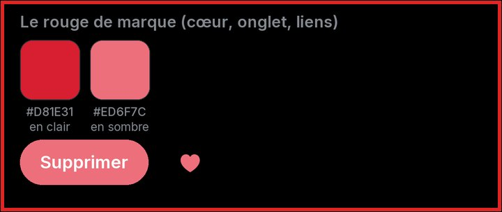
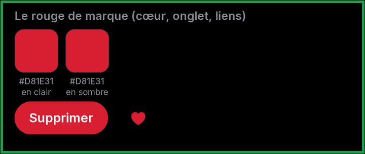
Dans le code : design-tokens.ts:175 brand { light: '#D81E31', dark: '#ED6F7C' } ; ImmersiveTakeCard.tsx:286 ; editorial.ts:118-122
Pour le compter : grep -rnE "colors\.brand\b" src app | grep -v test
Jev : raison_C1 → unjustified_exception (0.65) ; visible_C1 → 1.62 sur 3
Fond, texte et gris du thème ; la palette locale disparaît.
Le modèle unique : SuggestedUsers.tsx:41-52 → colors.background, textPrimary, textSecondary, border ; 1 fichier
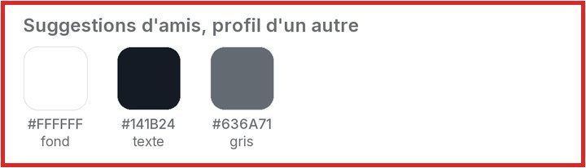
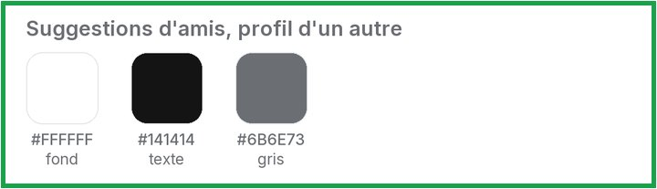
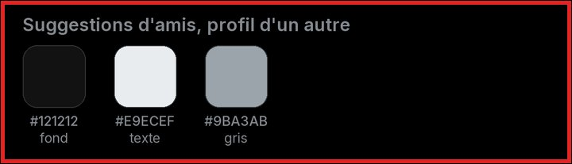
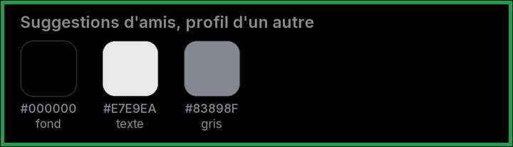
Dans le code : SuggestedUsers.tsx:41-52 bg #121212 sur une page #000000, ink #141B24/#E9ECEF, muted #636A71/#9BA3AB
Pour le compter : sed -n 41,52p src/components/profile/SuggestedUsers.tsx
Jev : raison_C5 → hardcoded_value (0.78) ; visible_C5 → 1.85 sur 3
Supprimer prend le rouge unique ; Archiver passe en noir en clair et en blanc en sombre, comme tu l'as tranché au point 105.
Le modèle unique : colors.danger et colors.foreground dans ConversationSwipeRow ; même rouge danger que les commentaires (poll-comments.tsx:3540, #C53637 en dur)
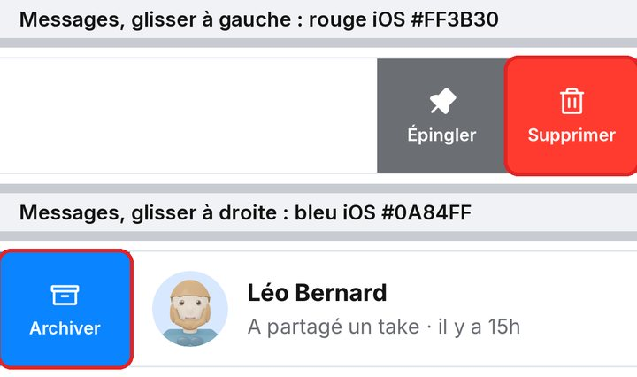
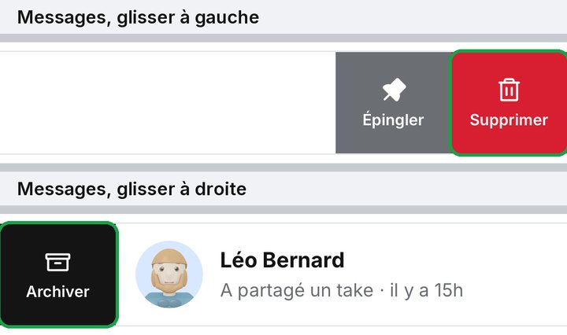
En sombre : capture pas encore faite.
Dans le code : messages/index.tsx:163 colors.danger (#FF3B30) ; Archiver #0A84FF mesuré sur la capture ; poll-comments.tsx:3540 bg-[#C53637]
Pour le compter : grep -n "C53637" "app/(app)/poll-comments.tsx"
Jev : raison_C3 → hardcoded_value (0.95) ; visible_C3 → 1.66 sur 3
Un bloc de 4 couleurs fixes pour toutes les images partagées.
Le modèle unique : SHARE_COLORS dans design-tokens.ts ; environ 15 lignes, 6 fichiers
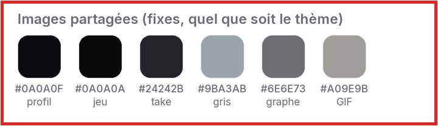
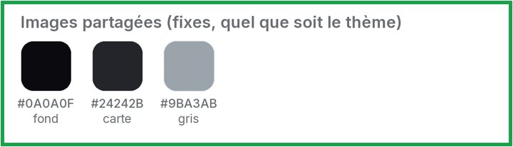
Dans le code : ProfileShareCard.tsx:39, Top8StoryCard.tsx:39, PollShareCard.tsx:25 #0A0A0F ; GameShareCard.tsx:28 #0A0A0A ; gris #9BA3AB, #6E6E73, #A09E9B
Pour le compter : grep -rn "0A0A0F\|0A0A0A" src/components/*/*ShareCard.tsx
Jev : raison_C12 → hardcoded_value (0.63) ; visible_C12 → 1.34 sur 3
Un seul noir de texte, #141414.
Le modèle unique : colors.textPrimary ; foreground, accent et progressAccent en deviennent des alias ; 5 hex dans 3 fichiers
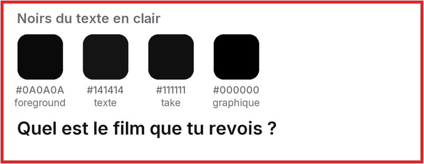
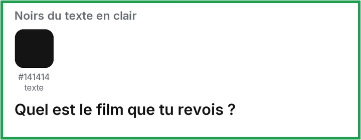
Dans le code : design-tokens.ts foreground #0A0A0A et textPrimary #141414 ; VoteGraph.tsx:45 #000000 ; ImmersiveTakeCard.tsx:245,256 #111111
Pour le compter : grep -rnE "'#(0A0A0A|111111|000000)'" src app --include=*.tsx | grep -v test | wc -l
Jev : raison_C8 → hardcoded_value (0.67) ; visible_C8 → 0.97 sur 3
Les couleurs de vote viennent toutes de voteFills, en clair comme en sombre.
Le modèle unique : theme.ts voteFills(isDark) ; 4 lignes dans 2 fichiers, 4 jetons agree/disagree supprimés
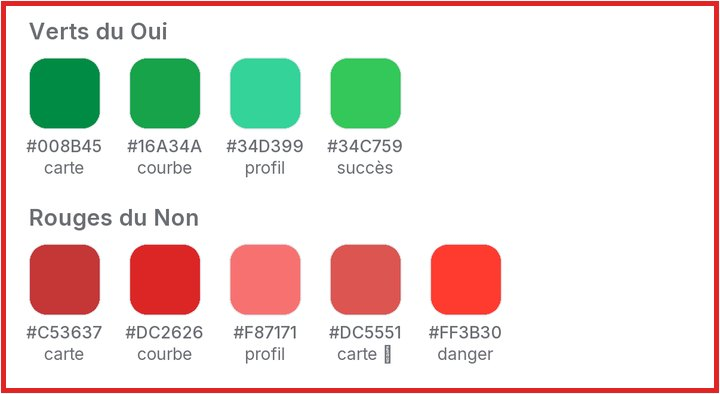
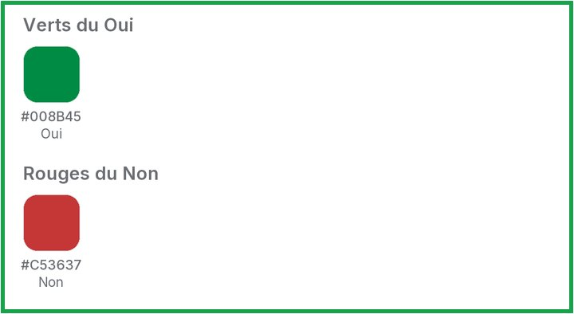
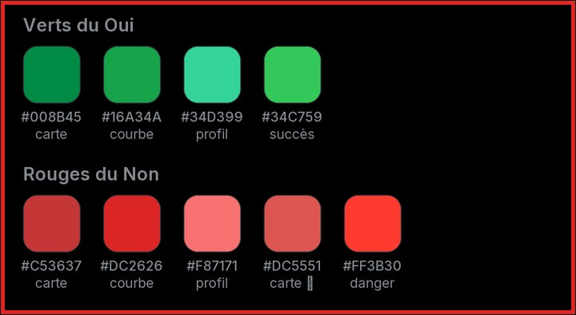
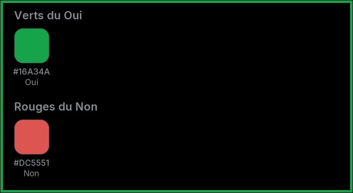
Dans le code : ProfileContentTabs.tsx:86-87 sombre #34D399/#F87171 ; VoteGraph.tsx:393,397 bg-[#DC2626] bg-[#16A34A] figés
Pour le compter : grep -rnE "34D399|F87171|bg-\[#DC2626\]|bg-\[#16A34A\]" src app
Jev : raison_C6 → missing_token (0.80) ; visible_C6 → 1.84 sur 3
Un jeu de 4 couleurs d'options, lu par le graphique, le GIF et la carte.
Le modèle unique : nouveau jeton choiceSeries dans design-tokens.ts ; remplace CHOICE_COLORS, BAR_COLORS du GIF et pollThemes
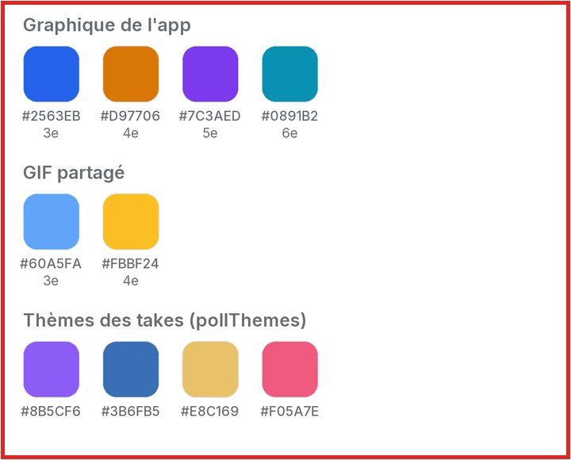
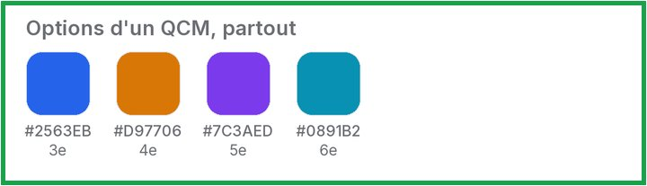
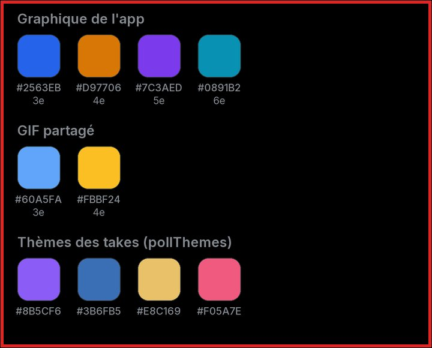
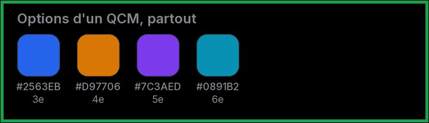
Dans le code : chart-series.ts:53 #2563EB #D97706 #7C3AED #0891B2 ; PollGifCard.tsx:49 #60A5FA #FBBF24 ; pollThemes.ts:5-13 (7 couleurs)
Pour le compter : grep -n "#2563EB\|#60A5FA" src/components/poll/*.ts*
Jev : raison_C7 → missing_token (0.53) ; visible_C7 → 1.79 sur 3
Un seul rouge : danger, notification et dangerText deviennent des alias du rouge de marque ; il reste le rouge de marque, le Non des votes et les drapeaux.
Le modèle unique : design-tokens.ts:74-98 ; 75 lignes passent déjà par ces jetons et suivent seules
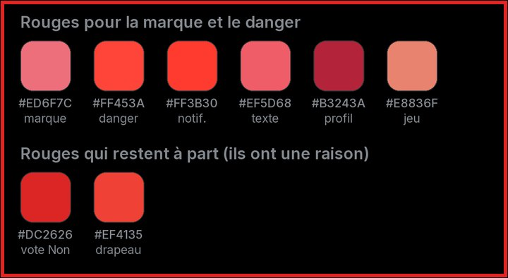
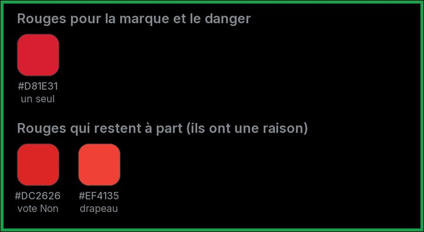
Dans le code : design-tokens.ts:74 notification #FF3B30 ; :77 danger #FF3B30/#FF453A ; :98 dangerText #D93F47/#EF5D68 ; editorial.ts:78 danger #B3243A ; game-ink.ts:60 danger #E8836F
Pour le compter : grep -rnE "colors\.(danger|dangerText|brand|notification)\b" src app | grep -v test
Jev : raison_C2 → missing_token (0.72) ; visible_C2 → 1.66 sur 3
Trois voiles, léger, moyen et fort, au lieu de douze valeurs.
Le modèle unique : jetons scrimSoft / scrim / scrimStrong dans design-tokens.ts ; environ 90 lignes dans 30 fichiers
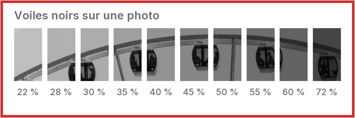
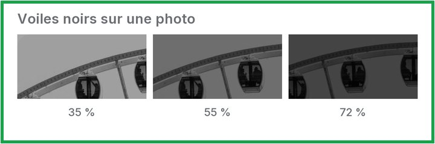
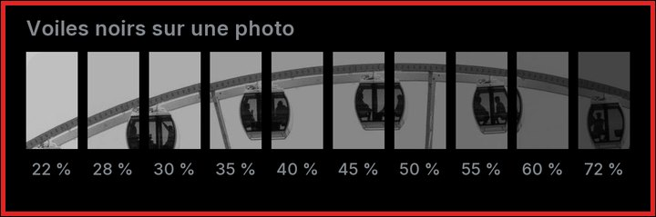
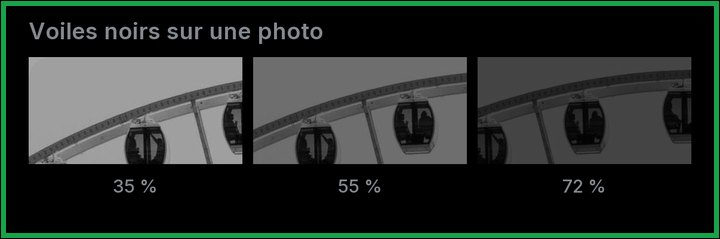
Dans le code : 44 rgba(0,0,0,…) dans 23 fichiers, 45 rgba(255,255,255,…) dans 22 fichiers ; opacités 0.6, 0.35, 0.55, 0.5, 0.28, 0.45, 0.22… ; InkFade.tsx 28 rgba
Pour le compter : grep -rhoE "rgba\( *0 *, *0 *, *0 *, *[0-9.]+" src app | sort | uniq -c | sort -rn
Jev : raison_C9 → missing_token (0.66) ; visible_C9 → 1.58 sur 3
Une échelle de 8 gris par thème ; chaque rôle pointe dessus.
Le modèle unique : grey0 à grey7 dans design-tokens.ts ; 48 valeurs opaques → environ 20
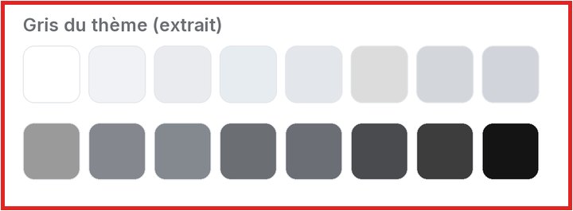
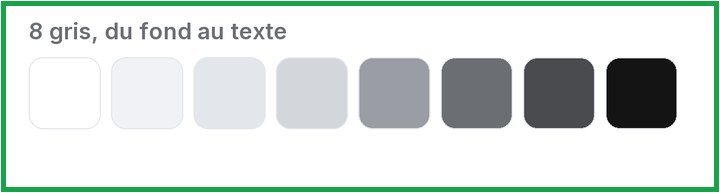
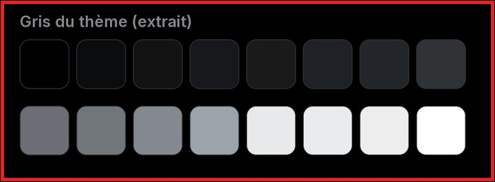
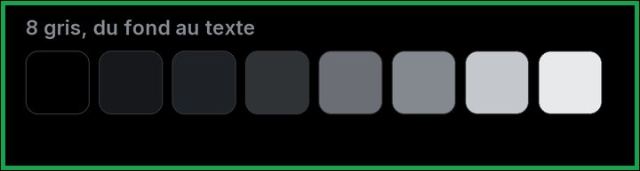
Dans le code : textSecondary.light #6B6E73 / textMuted.dark #6B6F75 ; textMuted.light #84888E / textSecondary.dark #83898F ; handle #D3D7DC / keyboardBackground #D1D4DA
Pour le compter : bun -e (distance par canal entre les hex de DESIGN_COLORS)
Jev : raison_C14 → missing_token (0.66) ; visible_C14 → 1.12 sur 3
Un nom par couleur : 24 alias et 19 jetons jamais lus en moins.
Le modèle unique : theme.ts:108-196 ; les plus lus à renommer : card (91), accent (56), accentText (51)
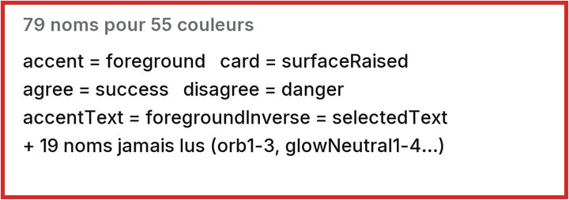
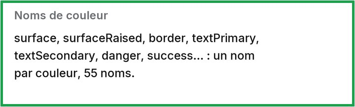
Dans le code : accent = foreground ; card = surfaceRaised ; agree = success ; 19 clés à 0 usage (orb1-3, glowNeutral1-4, keyText…)
Pour le compter : bun -e (regroupe les clés de lightTheme/darkTheme par paire de valeurs)
Jev : raison_C13 → missing_token (0.69) ; visible_C13 → 0.21 sur 3
Un seul fond d'affiche pour les takes sans image, dans l'app comme sur le GIF.
Le modèle unique : jeton posterGround (#EBEBEB / #141414) ; 3 lignes, 2 fichiers
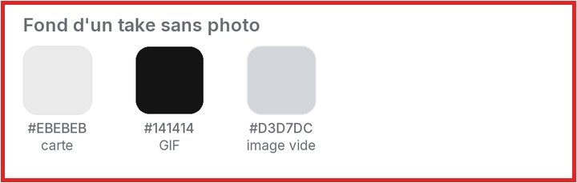
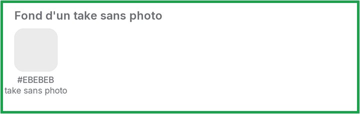
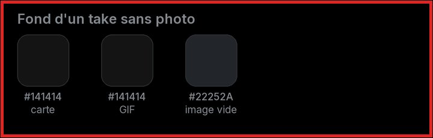
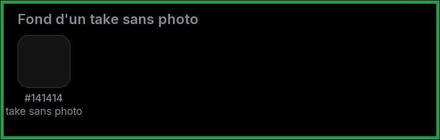
Dans le code : InkFade.tsx:79 #141414 et :145 #EBEBEB ; jeton placeholderImage #D3D7DC/#22252A ; PollGifCard.tsx:36 INK_BG #141414
Pour le compter : grep -n "EBEBEB\|INK_BG" src/components/poll/InkFade.tsx src/components/poll/PollGifCard.tsx
Jev : raison_C11 → duplicated_component (0.75) ; visible_C11 → 1.50 sur 3
Tout texte passe par AppText ; un test interdit une graisse sans police.
Le modèle unique : AppText + test design-system-architecture.test.ts ; 18 graisses et 18 classes font-bold sans famille, 14 fichiers
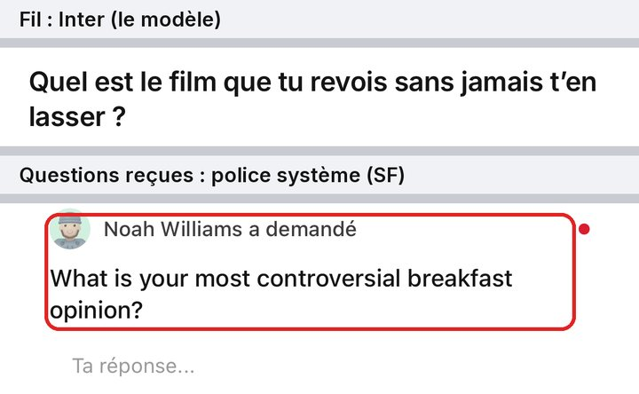
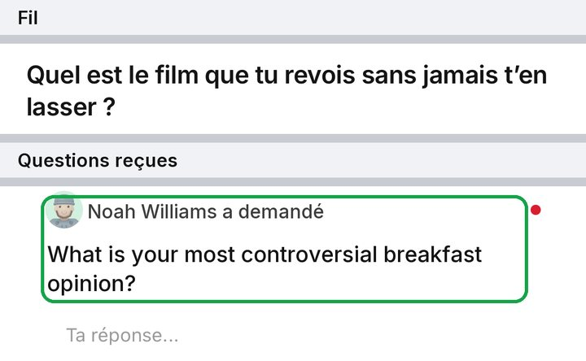
En sombre : capture pas encore faite.
Dans le code : questions-received.tsx:416-475 : 11 tailles, 0 fontFamily (écran entier en SF) ; ReportSheet.tsx:86 ; NearbyMap.tsx:649-735 ; CrashReportNotice.tsx:52-88
Pour le compter : grep -c "fontFamily\|font-inter\|FONT_" "app/(app)/questions-received.tsx"
Jev : raison_T5 → hardcoded_value (0.47) ; visible_T5 → 2.02 sur 3
Une seule échelle (TYPOGRAPHY) ; AppText en dérive ; le test bloque toute nouvelle taille en dur.
Le modèle unique : design-tokens.ts:261-297 + AppText.recipe.ts ; ajout de 14, 17 et 30 à l'échelle ; 90 demi-points (10,5 ; 12,5 ; 13,5…) ramenés au pas voisin
Dans le code : TYPOGRAPHY.size sans 14, 17 ni 30, que la recette utilise ; 14 est la 2e taille la plus employée (151 fois) ; TYPOGRAPHY.size lu 8 fois
Pour le compter : ( grep -ohE "fontSize: *[0-9.]+" ; grep -ohE "text-\[[0-9.]+px\]" ) | sort | uniq -c
Jev : raison_T10 → hardcoded_value (0.61) ; visible_T10 → 1.91 sur 3
Interligne et espacement viennent de la variante de texte, jamais écrits à la main.
Le modèle unique : AppText ; interdire leading-* et tracking-* hors design-system
Dans le code : 64 lineHeight + 202 leading-[..] (58 valeurs) ; le 15 px a quatre interlignes (18, 19, 20, 21) ; 41 letterSpacing + 76 tracking-[..]
Pour le compter : grep -ohE "text-\[15px\] leading-\[[0-9.]+px\]" -r src app | sort | uniq -c
Jev : raison_T11 → hardcoded_value (0.60) ; visible_T11 → 1.47 sur 3
Toutes les rangées en 15 semi-gras.
Le modèle unique : variante rowTitle dans AppText.recipe.ts ; une douzaine de styles sur 8 écrans
En sombre : capture pas encore faite.
Dans le code : SettingsRow.tsx:50 14/500 ; ListRow.tsx:35 15/600 ; ConversationRow.tsx:253 15/700 ; friends.tsx:333 15/600 ; SuggestedUsers.tsx:163 12,5
Pour le compter : grep -rnE "rowName|rowTitle|name:" app src --include=*.tsx | grep fontSize
Jev : raison_T2 → hardcoded_value (0.38) ; visible_T2 → 1.46 sur 3
Un seul sous-texte : 13 normal, gris.
Le modèle unique : variante rowSubtitle ; deux rangées voisines de Réglages comprises
Dans le code : SettingsRow.tsx:54 13/500 ; SettingsToggleRow.tsx:57 12/400 ; ConversationRow.tsx:259 13/400 ; ExploreScreen.tsx:1368 12/400
Pour le compter : grep -n "variant=" src/components/settings/Settings*Row.tsx
Jev : raison_T3 → hardcoded_value (0.47) ; visible_T3 → 1.31 sur 3
Deux tailles seulement : 17 dans les listes, 22 dans le take ouvert.
Le modèle unique : variantes questionFeed (17/600) et questionDetail (22/600) ; 7 styles
En sombre : capture pas encore faite.
Dans le code : FeedTakeRow.tsx:460 17/600 ; QuestionFeedCard.tsx:262 15,5/600 ; ExploreScreen.tsx:1251 21/700 ; poll-comments.tsx:3593 22/600 et :1933 20/600
Pour le compter : grep -rn "questionText\|question:" src app | grep fontSize
Jev : raison_T4 → missing_token (0.73) ; visible_T4 → 1.95 sur 3
Un seul titre de section : 13 semi-gras, gris.
Le modèle unique : variante sectionHeader dans AppText.recipe.ts ; environ 10 styles sur 8 écrans
En sombre : capture pas encore faite.
Dans le code : Réglages 15 gris ; Confidentialité eyebrow 12/600 espacé (SettingsSection.tsx:21) ; Activité 16/700 (notifications.tsx:415) ; Autour de toi 18/700 ; Top 8 16/600 (profile.tsx:1499)
Pour le compter : grep -rnE "sectionTitle|eyebrow|labelStrong" app src | grep -v test
Jev : raison_T1 → missing_token (0.69) ; visible_T1 → 1.92 sur 3
Un seul titre de feuille : 17 gras.
Le modèle unique : variante sheetTitle (17/700) ; environ 8 styles
Dans le code : ForwardModal.tsx:186 16/800 ; MessageEditSheet.tsx:38 17/800 ; AreaPickerSheet.tsx:836 18/700 ; GameShopModal.tsx:937 21/800 ; ReportSheet.tsx:86 17 SF
Pour le compter : grep -rn "title:" src/components --include=*Sheet*.tsx | grep fontSize
Jev : raison_T8 → missing_token (0.57) ; visible_T8 → 1.72 sur 3
Deux styles : légende 11 dans les bulles, méta 13 dans les rangées.
Le modèle unique : variantes caption et meta
Dans le code : [conversationId].tsx:417 10 ; :443 11/400 ; :471 11/500 ; ConversationRow.tsx:284 13/400 ; TipLine.tsx:359 11
Pour le compter : grep -n "fontSize: 1[0-3]" "app/(app)/messages/[conversationId].tsx"
Jev : raison_T9 → missing_token (0.51) ; visible_T9 → 1.65 sur 3
Deux styles : compteur 11 semi-gras, pastille 12 semi-gras.
Le modèle unique : variantes badge et pill
Dans le code : HomeBottomBar.tsx:721 11/600 ; questions-received.tsx:416 12/700 SF ; messages/index.tsx:863 12/600 ; TipSheet.tsx:709 12,5 ; questions-received.tsx:475 13/400 SF
Pour le compter : grep -rnE "badge|count" src app --include=*.tsx | grep fontSize
Jev : raison_T7 → missing_token (0.65) ; visible_T7 → 1.48 sur 3
Le texte de bouton vient d'AppButton, avec une taille compacte.
Le modèle unique : AppButton size compact (14/600) ; environ 10 styles sur 5 écrans
Dans le code : u/[username].tsx:394-400 14/600 et 14/500 ; GameTab.tsx:279 13,5 ; GameShopModal.tsx:1080 ; CrashReportNotice.tsx:79 15/700 SF
Pour le compter : grep -rn "AppButton" src app | wc -l
Jev : raison_T6 → duplicated_component (0.87) ; visible_T6 → 1.58 sur 3
Un seul nom de police, TYPOGRAPHY.family ; les trois autres deviennent des alias puis disparaissent.
Le modèle unique : design-tokens.ts TYPOGRAPHY.family ; FONT_PROFILE_* (608 refs), font-inter* (266), FONTS (12)
Dans le code : fonts.ts:36-46 ; theme.ts:200 FONTS ; tailwind.config.js fontFamily ; design-tokens.ts:267 dit Inter 800 pour le logo alors qu'il est en WorkSans
Pour le compter : grep -roE 'FONT_PROFILE_[A-Z_0-9]+' src app | wc -l
Jev : raison_T12 → duplicated_component (0.54) ; visible_T12 → 0.44 sur 3
Un seul en-tête, ScreenHeader : titre centré 17 sur les écrans ouverts, grand titre 30 seulement sur les onglets.
Le modèle unique : AppHeader.tsx:15 généralisé en ScreenHeader (inline, large, overlay) ; 26 écrans + 14 barres = 40 écrans
En sombre : capture pas encore faite.
Dans le code : AppHeader 26 écrans ; faits main : messages/new.tsx:179 30/700 ; questions-received.tsx:400 30/700 ; notifications.tsx:545 26/800 chevron nu ; messages/index.tsx:817 30/800 ; edit-field.tsx:312 17/700 ; details.tsx:313 hauteur 44
Pour le compter : comm -23 <(grep -rl caret-left.svg src app | sort) <(grep -rl AppHeader src app | sort)
Jev : raison_B1 → duplicated_component (1.00) ; visible_B1 → 2.00 sur 3
Un seul en-tête de feuille : poignée, titre 17, croix.
Le modèle unique : SheetHeader à côté de SheetModal ; 12 poignées faites main et environ 17 en-têtes
Dans le code : poignées 5×36 (SheetHandle.tsx:9), 5×36 rayon 3 (ShareSheet.tsx:257…), 4×40 (FriendsVotesModal.tsx:78, TipSheet.tsx:739 à 0,5), 4×36 (MessageEditSheet.tsx:29) ; SheetHandle 2 usages
Pour le compter : grep -rl '<SheetModal' src app | wc -l
Jev : raison_B5 → duplicated_component (0.51) ; visible_B5 → 1.86 sur 3
Un seul composant d'onglets, même taille, même trait, même animation.
Le modèle unique : UnderlineTabs dans design-system/, sur MovingUnderline ; 5 écrans
En sombre : capture pas encore faite.
Dans le code : profile.tsx:222 et u/[username].tsx:542 (copié deux fois) 16/500 ; ExploreScreen.tsx:640 14 ; friends.tsx:321 15 bordure fixe sans animation ; HomeTopBar.tsx:267 15/700
Pour le compter : grep -rn 'accessibilityRole="tab"' src app
Jev : raison_B4 → duplicated_component (0.97) ; visible_B4 → 1.82 sur 3
Tous les champs de recherche passent par SearchField.
Le modèle unique : SearchField.tsx:39 avec blur et size ; 4 champs
En sombre : capture pas encore faite.
Dans le code : SearchField 12 usages ; ExploreScreen.tsx:582 ; AreaPickerSheet.tsx:543 rayon 14 texte 13 ; EmojiPickerSheet.tsx:189 sans loupe ; MapSearchBar.tsx:62 hauteur 48
Pour le compter : grep -rl '<SearchField' src app | grep -v design-system | wc -l
Jev : raison_B6 → duplicated_component (1.00) ; visible_B6 → 1.75 sur 3
Un seul bouton fermer, même rond que le retour.
Le modèle unique : CloseButton dans design-system/ ; 28 croix dans 26 fichiers
En sombre : capture pas encore faite.
Dans le code : edit-profile.tsx:141 rond 38 croix 20 ; create.tsx:807 rond 28 croix 17 ; AvatarStep.tsx:50 44 croix 24 ; game.tsx:2139 croix 22
Pour le compter : grep -rn 'icon={XIcon}' src app | grep -oE 'size=\{[0-9]+\}' | sort | uniq -c
Jev : raison_B3 → duplicated_component (0.90) ; visible_B3 → 1.74 sur 3
Un seul bouton retour : rond de 36, chevron de 20.
Le modèle unique : BackButton dans design-system/ ; 31 copies
Dans le code : IconButton 36 (15 fois) ou 38 (5 fois) ; chevron nu 26 notifications.tsx:545 ; [conversationId].tsx:3639 ; poll-comments.tsx:2741 chevron 22
Pour le compter : grep -rn "t('common.back')" src app | wc -l
Jev : raison_B2 → duplicated_component (1.00) ; visible_B2 → 1.66 sur 3
La feuille de partage d'un take réutilise la feuille de partage commune.
Le modèle unique : SharePollSheet compose ShareSheet ; 5 partages (take, profil, Top 8, réponse, sondage)
Dans le code : ShareSheet.tsx 494 lignes ; SharePollSheet.tsx 827 lignes, refait poignée (:526), recherche (:559) et liste d'amis
Pour le compter : wc -l src/components/share/ShareSheet.tsx src/components/share/SharePollSheet.tsx
Jev : raison_B7 → duplicated_component (1.00) ; visible_B7 → 1.40 sur 3
Tous les boutons passent par AppButton, avec une taille moyenne de 41.
Le modèle unique : AppButton.recipe.ts:5-9 + taille medium et variantes onMedia/glass ; 67 boutons dans 45 fichiers
Dans le code : AppButton 78 usages ; actions du profil 41 rayon 22 codées deux fois (profile.tsx:1454, u/[username].tsx:390) ; photo-editor 5, AvatarWizard 6, NearbyMap 4
Pour le compter : (liste btns.txt) wc -l ; cut -d: -f1 | sort -u | wc -l
Jev : raison_K3 → duplicated_component (1.00) ; visible_K3 → 1.89 sur 3
Un seul composant Chip, en deux tailles.
Le modèle unique : Chip (sm/md ; filter/status/count) dans design-system/ ; remplace AroundYouChip, NewTakesPill, OptionPill, ResumeLivePill, SettingsOptionPill, SummaryChip
Dans le code : FilterChip.tsx:76 2 usages ; 57 styles chip/pill/badge hors design-system
Pour le compter : grep -rhoE 'function [A-Z][A-Za-z]*(Chip|Pill)\b' src app
Jev : raison_K4 → duplicated_component (0.95) ; visible_K4 → 1.83 sur 3
Une rangée de personne : avatar 44, nom, pseudo, action à droite.
Le modèle unique : PersonRow dans design-system/, en élargissant ListRow ; environ 12 rangées
En sombre : capture pas encore faite.
Dans le code : avatar 36 (poll-votes), 40 (blocked-users, Explorer), 42 (onboarding), 44 (ForwardModal), 48 (ShareSheet, ConversationRow.tsx:25), 52 (friends, SuggestedUsers) ; ListRow 1 usage
Pour le compter : grep -rn '<Avatar' src app | grep -oE 'size=\{[0-9]+\}' | sort | uniq -c
Jev : raison_K2 → duplicated_component (0.95) ; visible_K2 → 1.80 sur 3
Cinq tailles d'icône : 14, 16, 20, 24, 28.
Le modèle unique : ICON_SIZE sur PhosphorIcon ; 25 tailles → 5
Dans le code : tailles de 11 à 40 ; 20 (57), 16 (42), 18 (32), 22 (22), 15 (21), 24 (19)
Pour le compter : grep -rhE -A2 '<PhosphorIcon' src app | grep -oE 'size=\{[0-9]+\}' | sort -u | wc -l
Jev : raison_K7 → hardcoded_value (0.68) ; visible_K7 → 1.80 sur 3
Les angles viennent de RADIUS ; plus de 3,5, 6,5 ou 8,5.
Le modèle unique : DESIGN_RADII (14 marches) ; 116 rayons en dur, 34 valeurs
Dans le code : borderRadius en dur : 2, 3, 3.5, 4, 5, 6, 6.5, 7, 8, 8.5, 9, 10, 11, 12, 13, 14, 15, 16, 17, 18, 19, 20, 21, 22, 24, 26, 27, 32, 40, 62, 999 ; 78 via jeton
Pour le compter : grep -rhoE 'borderRadius: *[0-9.]+' src app | sort | uniq -c
Jev : raison_K5 → hardcoded_value (0.96) ; visible_K5 → 1.67 sur 3
Une seule marge d'écran : 16.
Le modèle unique : SPACING.screen, et inlineRem: 16 dans withNativeWind (aujourd'hui 1 rem = 14 pt, donc px-4 fait 14)
En sombre : capture pas encore faite.
Dans le code : paddingHorizontal 16 (44), 14 (19), 12 (15), 18 (5) ; px-4 = 14 pt (80) ; AppHeader px-4 ; ConversationRow.tsx:24 PAD_H 14 ; fil 18
Pour le compter : grep -rhoE 'paddingHorizontal: *[0-9]+|\bpx-(\[[0-9.]+px\]|[0-9.]+)' src app | sort | uniq -c | sort -rn
Jev : raison_K1 → hardcoded_value (0.70) ; visible_K1 → 1.54 sur 3
Quatre ombres nommées, et c'est tout.
Le modèle unique : shadow('card'|'float'|'soft'|'subtle') dans design-tokens.ts ; 20 blocs, 22 elevation
Dans le code : HomeTopBar.tsx:380 0,08/6 ; RadiusSlider.tsx:198 ; ZoneSortMenu.tsx:89 ; TipLine.tsx:287 #0f172a ; 9 opacités de 0,08 à 0,5
Pour le compter : grep -rhoE 'shadowOpacity: *[0-9.]+' src app | sort | uniq -c
Jev : raison_K6 → hardcoded_value (0.98) ; visible_K6 → 1.53 sur 3
Mesurés sur main au commit 1aee27bf6, dans apps/mobile/src et apps/mobile/app, tests exclus.
| Quoi | Combien | Commande |
|---|---|---|
| Couleurs hex écrites en dur (lignes / fichiers) | 360 / 65 | grep -nE "['\"]#[0-9A-Fa-f]{3,8}['\"]" (hors jetons) |
| Couleurs rgba() écrites en dur (lignes / fichiers) | 144 / 46 | grep -nE "rgba?\(" |
| Hex distincts dans l'app | 250 | grep -hoE … | sort -u | wc -l |
| Tailles de texte écrites à la main (StyleSheet + classes) | 841, 45 valeurs | ( grep -ohE "fontSize: *[0-9.]+" ; grep -ohE "text-\[[0-9.]+px\]" ) | sort | uniq -c |
| … dont demi-points (10,5 ; 12,5 ; 13,5…) | 90 | grep -nE "fontSize: *1[0-6]\.5|text-\[1[0-6]\.5px\]" |
| Tailles passées par le jeton TYPOGRAPHY.size | 8 | grep -ohE "fontSize: *TYPOGRAPHY[.a-zA-Z0-9]+" |
| <AppText> contre <Text> bruts | 125 / 860 | grep -c "<AppText" ; grep -c "<Text\b" |
| Interlignes distincts | 58 | grep -ohE "lineHeight: *[0-9.]+|leading-\[[0-9.]+px\]" | sort -u |
| Rayons d'angle écrits en dur (fois / valeurs) | 116 / 34 | grep -hoE "borderRadius: *[0-9.]+" | sort | uniq -c |
| Barres du haut faites main à côté d'AppHeader | 14 (AppHeader : 26 écrans) | comm -23 <(grep -rl caret-left.svg) <(grep -rl AppHeader) |
| Boutons retour copiés | 31 | grep -rn "t('common.back')" | wc -l |
| Croix de fermeture (fichiers / tailles) | 28 dans 26 / 9 | grep -rn 'icon={XIcon}' | grep -oE 'size=\{[0-9]+\}' | sort | uniq -c |
| Versions des onglets soulignés | 5 | grep -rn 'accessibilityRole="tab"' |
| Boutons faits main (plancher) / AppButton | 67 / 78 | Pressable ou TouchableOpacity avec fond, rayon et hauteur |
| Marges horizontales distinctes | 18 valeurs (16 ×44, 14 ×19, 12 ×15, 18 ×5…) | grep -hoE "paddingHorizontal: *[0-9]+" | sort | uniq -c |
| Tailles d'icône | 25 | grep -A2 '<PhosphorIcon' | grep -oE 'size=\{[0-9]+\}' | sort -u |
Les captures « Aujourd'hui » sont de vraies captures de l'app (simulateur, API locale, compte de démo du seed, 30/09). Les solutions sont ces mêmes captures retouchées, avec les pixels de l'app et sa police Inter à la bonne taille. Aucune image générée.
Les points qui vivent dans le code montrent les vraies valeurs, dessinées à l'échelle, dans les deux thèmes.
Raison et ordre : Jev (TypeSafe), une question raison_* et une question visible_* par point, dans un seul appel.
Rien n'est codé : cette page sert à trancher.